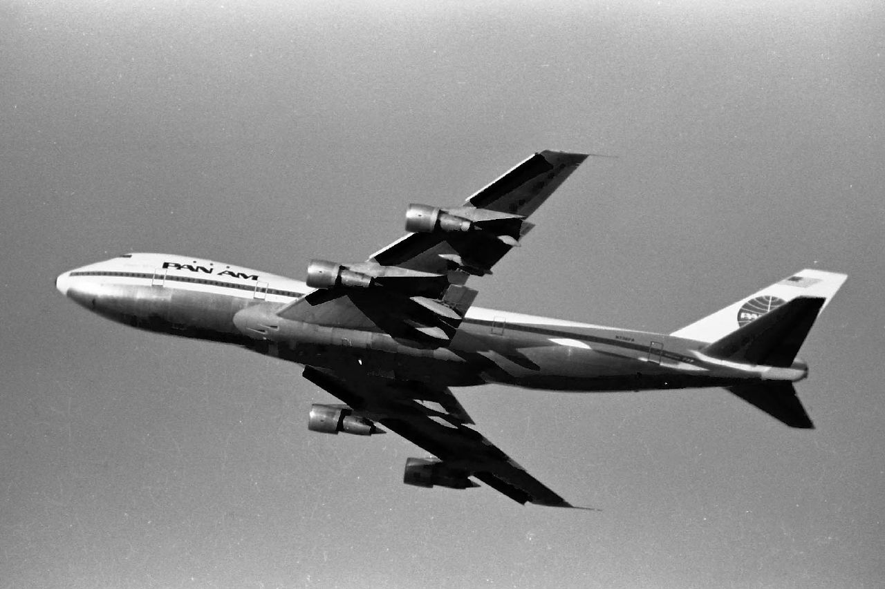
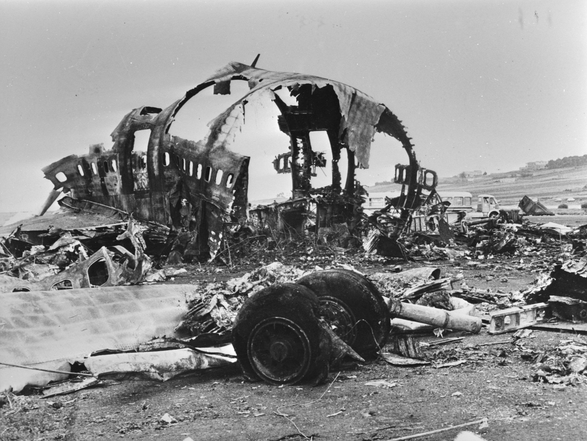

Tenerife Airport Disaster - 1977
KLM Flight 4805
.jpg)
KLM Flight 4805 was a charter flight for Holland International Travel Group and had arrived from Amsterdam Airport Schiphol, Netherlands. Its cockpit crew consisted of captain Jacob Veldhuyzen van Zanten, age 50, first officer Klaas Meurs, age 42, and flight engineer Willem Schreuder, age 48. At the time of the accident, Veldhuyzen van Zanten was KLM's chief flight instructor, with 11,700 flight hours, of which 1,545 hours were on the 747. Meurs had 9,200 flight hours, of which 95 hours were on the 747. Schreuder had 17,031 flight hours, of which 543 hours were on the 747. The aircraft was a Boeing 747-206B, registration PH-BUF, named Rijn (Rhine). The KLM jet was carrying 14 crew members and 235 passengers, including 52 children. Most of the KLM passengers were Dutch; also on board were 4 Germans, 2 Austrians and 2 Americans. After the aircraft landed at Tenerife, the passengers were transported to the airport terminal. One of the inbound passengers, who lived on the island with her boyfriend, chose not to re-board the 747, leaving 234 passengers on board.
Pan Am Flight 1736
Pan Am Flight 1736 had originated at Los Angeles International Airport, with an intermediate stop at New York's John F. Kennedy International Airport (JFK). The aircraft was a Boeing 747-121, registration N736PA, named Clipper Victor. Of the 380 passengers (mostly of retirement age, but including two children), 14 had boarded in New York, where the crew was also changed. The new crew consisted of captain Victor Grubbs, age 56, first officer Robert Bragg, age 39, flight engineer George Warns, age 46, and 13 flight attendants. At the time of the accident, Grubbs had 21,043 hours of flight time, of which 564 hours were on the 747. Bragg had 10,800 flight hours, of which 2,796 hours were on the 747. Warns had 15,210 flight hours, of which 559 hours were on the 747. This particular aircraft had operated the inaugural 747 commercial flight on January 22, 1970. On August 2, 1970, in its first year of service, it also became the first 747 to be hijacked: en route between JFK and Luis Muñoz Marín International Airport in San Juan, Puerto Rico, it was diverted to José Martí International Airport in Havana, Cuba.
The Disaster

On March 27, 1977, two Boeing 747 passenger jets, operating KLM Flight 4805 and Pan Am Flight 1736, collided on the runway at Los Rodeos Airport (now Tenerife North Airport) on the Spanish island of Tenerife. Resulting in 583 fatalities, this accident is the deadliest in aviation history.
A terrorist incident at Gran Canaria Airport had caused many flights to be diverted to Los Rodeos, including the two aircraft involved in the accident. The airport quickly became congested with parked airplanes blocking the only taxiway and forcing departing
aircraft to taxi on the runway instead. Patches of thick fog were drifting across the airfield, hence visibility was greatly reduced for pilots and the control tower.
The collision occurred when the KLM airliner initiated its takeoff run while the Pan Am airliner, shrouded in fog, was still on the runway and about to turn off onto the taxiway. The impact and resulting fire killed everyone on board KLM 4805 and most of the occupants of Pan Am 1736, with only 61 survivors in the front section of the aircraft.
The subsequent investigation by Spanish authorities concluded that the primary cause of the accident was the KLM captain's decision to take off in the mistaken belief that a takeoff clearance from air traffic control (ATC) had been issued. Dutch investigators placed a greater emphasis on mutual misunderstanding in radio communications between the
KLM crew and ATC, but ultimately KLM admitted that their crew was responsible for the accident and the airline agreed to financially compensate the relatives of all of the victims.
The disaster had a lasting influence on the industry, highlighting in particular the vital importance of using standardized phraseology in radio communications. Cockpit procedures were also reviewed, contributing to the establishment of crew resource management as a fundamental part of airline pilots' training.